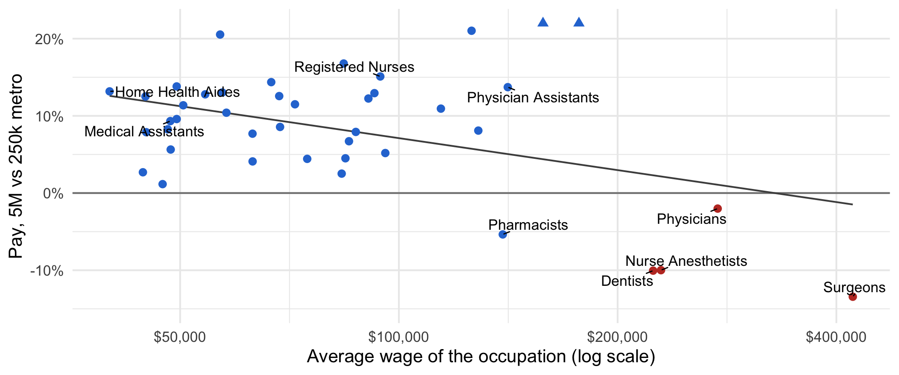
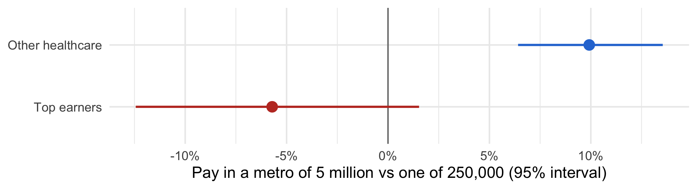
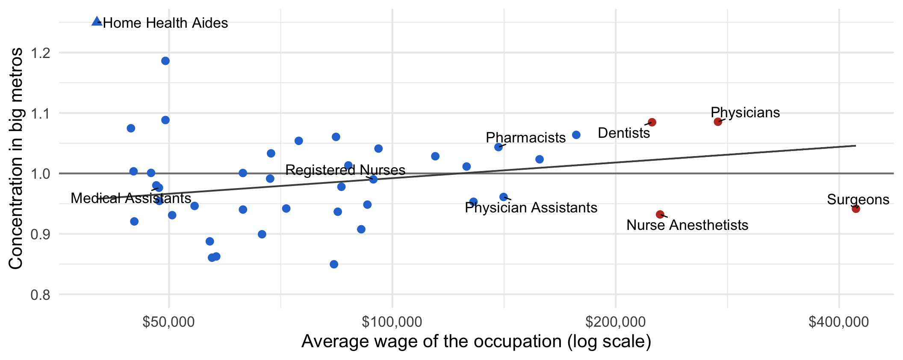

Ability sorting and the urban wage premium, with 2024 U.S. data
COMM 407 example presentation · after Lee (2010), Journal of Urban Economics
Thesis
Code
suppressPackageStartupMessages({library(tidyverse)library(readxl)library(fixest)library(ggrepel)})# Census Bureau files, downloaded once into data/acs/. The PUMS file is the# 2024 American Community Survey 1-year sample, about 1% of the population# (600 MB zipped).census <-"https://www2.census.gov"files <-c(csv_pus_2024.zip ="programs-surveys/acs/data/pums/2024/1-Year/csv_pus.zip",PUMS_Data_Dictionary_2024.csv ="programs-surveys/acs/tech_docs/pums/data_dict/PUMS_Data_Dictionary_2024.csv",tract_puma_2020.txt ="geo/docs/maps-data/data/rel2020/2020_Census_Tract_to_2020_PUMA.txt",cbsa_delineation_2020.xls ="programs-surveys/metro-micro/geographies/reference-files/2020/delineation-files/list1_2020.xls")dir.create("data/acs", showWarnings =FALSE)options(timeout =3600)for (f innames(files)) { dest <-file.path("data/acs", f)if (!file.exists(dest)) download.file(file.path(census, files[[f]]), dest, mode ="wb")}# Person records: the zip holds two CSV files with 3.4 million people.# Only the columns used here are read.read_pums <-function(file) { path <-unzip("data/acs/csv_pus_2024.zip", files = file, exdir =tempdir())on.exit(unlink(path))read_csv(path,col_select =c(STATE, PUMA, PWGTP, AGEP, SEX, COW, ESR, OCCP, WAGP, WKHP, WKWN, ADJINC),col_types =cols(STATE ="c", PUMA ="c", OCCP ="c", .default ="d"))}persons <-bind_rows(read_pums("psam_pusa.csv"), read_pums("psam_pusb.csv"))# Metro areas. The 2020 delineation uses the same counties as the 2020 tract# file. A PUMA belongs to a metro only if all its tracts are in that metro;# n_distinct() counts NA (outside any metro) as a value, so PUMAs that cross# a metro boundary are dropped.metro_counties <-read_excel("data/acs/cbsa_delineation_2020.xls", skip =2) |>filter(`Metropolitan/Micropolitan Statistical Area`=="Metropolitan Statistical Area") |>transmute(county =paste0(`FIPS State Code`, `FIPS County Code`),cbsa =`CBSA Code`)puma_metro <-read_csv("data/acs/tract_puma_2020.txt",col_types =cols(.default ="c")) |>transmute(STATE = STATEFP, PUMA = PUMA5CE,county =paste0(STATEFP, COUNTYFP)) |>left_join(metro_counties, by ="county") |>summarise(metros =n_distinct(cbsa), cbsa =first(cbsa), .by =c(STATE, PUMA)) |>filter(metros ==1, !is.na(cbsa))# Metro population: the weighted count of everyone in its PUMAsmetro_pop <- persons |>inner_join(puma_metro, by =c("STATE", "PUMA")) |>summarise(pop =sum(PWGTP), .by = cbsa)# Occupation names. Dictionary rows have different numbers of fields, so the# occupation rows are read on their own.occupations <-read_lines("data/acs/PUMS_Data_Dictionary_2024.csv") |>str_subset("^VAL,OCCP,") |>I() |>read_csv(col_names =c("type", "variable", "format", "length", "OCCP", "to","occupation"),col_types =cols(.default ="c")) |>transmute(OCCP, occupation =str_remove(occupation, "^[A-Z]{3}-"))# Full-time, full-year wage earners aged 25-64 living in a metro: healthcare# (codes 3000-3655, without the three veterinary occupations) and lawyers (2100)healthcare <-setdiff(as.character(c(3000:3550, 3601:3655)), c("3250", "3424", "3648"))workers <- persons |>filter(OCCP %in%c(healthcare, "2100"), ESR %in%1:2, COW %in%1:5, # employed, working for wagesbetween(AGEP, 25, 64), WKHP >=35, WKWN >=50, WAGP >0) |>inner_join(puma_metro, by =c("STATE", "PUMA")) |>left_join(metro_pop, by ="cbsa") |>left_join(occupations, by ="OCCP") |>mutate(wage = WAGP * ADJINC /1e6, female = SEX ==2)# Skill = the occupation's average wage. Occupations with fewer than 200# workers in the sample are dropped.skill <- workers |>filter(OCCP %in% healthcare) |>summarise(n =n(), mean_wage =weighted.mean(wage, PWGTP),.by =c(OCCP, occupation)) |>filter(n >=200)# Top earners: occupations averaging $200,000 or moretop_cutoff <-200000health <- workers |>inner_join(select(skill, OCCP, mean_wage), by ="OCCP") |>mutate(top = mean_wage >= top_cutoff)# Pay difference between a metro of 5 million and one of 250,000, in percent,# from an elasticity of pay with respect to metro populationbig_vs_small <-function(b) 100* (exp(b *log(5e6/250000)) -1)# Urban wage premium of each occupation: log wage on log metro population,# holding age and sex fixed. Standard errors clustered by metro.estimates <-function(models) {coeftable(models, keep ="pop") |>transmute(OCCP =as.character(sample), b = Estimate, se =`Std. Error`)}premium_by_occupation <-function(data) {feols(log(wage) ~log(pop) + AGEP +I(AGEP^2) + female,data = data, weights =~PWGTP, split =~OCCP, cluster =~cbsa) |>estimates()}# Concentration: Poisson regression of a group's weighted worker count in# every metro, zeros included, on log population. 1 = spread like# population; above 1 = concentrated in big metros.concentration_by <-function(group) { health |>count(cbsa, group = {{ group }}, wt = PWGTP, name ="workers") |>complete(cbsa = metro_pop$cbsa, group, fill =list(workers =0)) |>left_join(metro_pop, by ="cbsa") |>fepois(workers ~log(pop), data = _, split =~group, vcov ="hetero") |>coeftable(keep ="pop") |>transmute(group =as.character(sample), b = Estimate, se =`Std. Error`)}by_occupation <- skill |>left_join(premium_by_occupation(health), by ="OCCP") |>left_join(concentration_by(OCCP), by =c("OCCP"="group"),suffix =c("", "_conc")) |>mutate(top = mean_wage >= top_cutoff)top_conc <-concentration_by(top)# Top earners against other healthcare workers, comparing workers in the same# occupation. The second model's interaction is the gap between the groups.top_vs_rest <-function(data) { groups <-feols(log(wage) ~i(top, log(pop)) + AGEP +I(AGEP^2) + female | OCCP,data = data, weights =~PWGTP, cluster =~cbsa) gap <-feols(log(wage) ~log(pop) +log(pop):top + AGEP +I(AGEP^2) + female | OCCP,data = data, weights =~PWGTP, cluster =~cbsa)tibble(group =c("Other healthcare", "Top earners", "Gap"),b =c(coef(groups)[c("top::FALSE:log(pop)", "top::TRUE:log(pop)")],coef(gap)[["log(pop):topTRUE"]]),se =c(se(groups)[c("top::FALSE:log(pop)", "top::TRUE:log(pop)")],se(gap)[["log(pop):topTRUE"]]))}main <-top_vs_rest(health)younger <-top_vs_rest(filter(health, AGEP <50))older <-top_vs_rest(filter(health, AGEP >=50))lower_cutoff <-top_vs_rest(mutate(health, top = mean_wage >=150000))# Precision-weighted lines through the occupation estimates, and the same# premium line for workers aged 50-64 onlyfit_premium <-lm(b ~log(mean_wage), data = by_occupation, weights =1/ se^2)fit_conc <-lm(b_conc ~log(mean_wage), data = by_occupation, weights =1/ se_conc^2)fit_older <-lm(b ~log(mean_wage), weights =1/ se^2,data =left_join(skill, premium_by_occupation(filter(health, AGEP >=50)),by ="OCCP"))p_value <-function(fit) summary(fit)$coefficients[2, 4]# For slide text and chartspct <-function(x) paste0(if_else(x <0, "−", "+"), abs(round(x)), "%")interval <-function(row) {paste0(pct(big_vs_small(row$b -1.96* row$se)), " to ",pct(big_vs_small(row$b +1.96* row$se)))}top_names <- by_occupation |>filter(top) |>arrange(desc(mean_wage)) |>pull(occupation)next_best <- by_occupation |>filter(!top) |>slice_max(mean_wage)labelled <-c("Surgeons", "Physicians", "Dentists", "Nurse Anesthetists","Pharmacists", "Registered Nurses", "Physician Assistants","Medical Assistants", "Home Health Aides")wage_range <-range(by_occupation$mean_wage)group_colours <-c(`TRUE`="#c0392b", `FALSE`="#2a78d6")# Values beyond a chart's axis limits are drawn at the edge as triangles, so# a few imprecise estimates do not stretch the chartsquish_to <-function(x, limits) pmin(pmax(x, limits[1]), limits[2])off_scale_shapes <-c(`FALSE`=16, `TRUE`=17)
Big U.S. cities pay most healthcare workers more, but not the best-paid. Top earners give up the big-city premium to live in big cities, as if big-city variety were a luxury they buy.
Evidence: 63,672 full-time healthcare wage earners in 315 U.S. metro areas, 2024 American Community Survey.
Comparison: workers in the same occupation, in metros of different sizes.
What we add: Lee (2010) found this pattern in 2000 data. We test it 24 years later.
Two explanations, two predictions
Productivity spillovers
Consumer city
Why big cities pay more
Workers are more productive there
Housing costs more; most workers need compensation
Pay of top-skill workers in big cities
Higher, like everyone else’s
Not higher: they value variety, a luxury good
Test where the explanations disagree: the pay of the highest-skill workers.
The better an occupation pays, the smaller its big-city premium
Code
suppressPackageStartupMessages({library(tidyverse)library(readxl)library(fixest)library(ggrepel)})# Census Bureau files, downloaded once into data/acs/. The PUMS file is the# 2024 American Community Survey 1-year sample, about 1% of the population# (600 MB zipped).census <-"https://www2.census.gov"files <-c(csv_pus_2024.zip ="programs-surveys/acs/data/pums/2024/1-Year/csv_pus.zip",PUMS_Data_Dictionary_2024.csv ="programs-surveys/acs/tech_docs/pums/data_dict/PUMS_Data_Dictionary_2024.csv",tract_puma_2020.txt ="geo/docs/maps-data/data/rel2020/2020_Census_Tract_to_2020_PUMA.txt",cbsa_delineation_2020.xls ="programs-surveys/metro-micro/geographies/reference-files/2020/delineation-files/list1_2020.xls")dir.create("data/acs", showWarnings =FALSE)options(timeout =3600)for (f innames(files)) { dest <-file.path("data/acs", f)if (!file.exists(dest)) download.file(file.path(census, files[[f]]), dest, mode ="wb")}# Person records: the zip holds two CSV files with 3.4 million people.# Only the columns used here are read.read_pums <-function(file) { path <-unzip("data/acs/csv_pus_2024.zip", files = file, exdir =tempdir())on.exit(unlink(path))read_csv(path,col_select =c(STATE, PUMA, PWGTP, AGEP, SEX, COW, ESR, OCCP, WAGP, WKHP, WKWN, ADJINC),col_types =cols(STATE ="c", PUMA ="c", OCCP ="c", .default ="d"))}persons <-bind_rows(read_pums("psam_pusa.csv"), read_pums("psam_pusb.csv"))# Metro areas. The 2020 delineation uses the same counties as the 2020 tract# file. A PUMA belongs to a metro only if all its tracts are in that metro;# n_distinct() counts NA (outside any metro) as a value, so PUMAs that cross# a metro boundary are dropped.metro_counties <-read_excel("data/acs/cbsa_delineation_2020.xls", skip =2) |>filter(`Metropolitan/Micropolitan Statistical Area`=="Metropolitan Statistical Area") |>transmute(county =paste0(`FIPS State Code`, `FIPS County Code`),cbsa =`CBSA Code`)puma_metro <-read_csv("data/acs/tract_puma_2020.txt",col_types =cols(.default ="c")) |>transmute(STATE = STATEFP, PUMA = PUMA5CE,county =paste0(STATEFP, COUNTYFP)) |>left_join(metro_counties, by ="county") |>summarise(metros =n_distinct(cbsa), cbsa =first(cbsa), .by =c(STATE, PUMA)) |>filter(metros ==1, !is.na(cbsa))# Metro population: the weighted count of everyone in its PUMAsmetro_pop <- persons |>inner_join(puma_metro, by =c("STATE", "PUMA")) |>summarise(pop =sum(PWGTP), .by = cbsa)# Occupation names. Dictionary rows have different numbers of fields, so the# occupation rows are read on their own.occupations <-read_lines("data/acs/PUMS_Data_Dictionary_2024.csv") |>str_subset("^VAL,OCCP,") |>I() |>read_csv(col_names =c("type", "variable", "format", "length", "OCCP", "to","occupation"),col_types =cols(.default ="c")) |>transmute(OCCP, occupation =str_remove(occupation, "^[A-Z]{3}-"))# Full-time, full-year wage earners aged 25-64 living in a metro: healthcare# (codes 3000-3655, without the three veterinary occupations) and lawyers (2100)healthcare <-setdiff(as.character(c(3000:3550, 3601:3655)), c("3250", "3424", "3648"))workers <- persons |>filter(OCCP %in%c(healthcare, "2100"), ESR %in%1:2, COW %in%1:5, # employed, working for wagesbetween(AGEP, 25, 64), WKHP >=35, WKWN >=50, WAGP >0) |>inner_join(puma_metro, by =c("STATE", "PUMA")) |>left_join(metro_pop, by ="cbsa") |>left_join(occupations, by ="OCCP") |>mutate(wage = WAGP * ADJINC /1e6, female = SEX ==2)# Skill = the occupation's average wage. Occupations with fewer than 200# workers in the sample are dropped.skill <- workers |>filter(OCCP %in% healthcare) |>summarise(n =n(), mean_wage =weighted.mean(wage, PWGTP),.by =c(OCCP, occupation)) |>filter(n >=200)# Top earners: occupations averaging $200,000 or moretop_cutoff <-200000health <- workers |>inner_join(select(skill, OCCP, mean_wage), by ="OCCP") |>mutate(top = mean_wage >= top_cutoff)# Pay difference between a metro of 5 million and one of 250,000, in percent,# from an elasticity of pay with respect to metro populationbig_vs_small <-function(b) 100* (exp(b *log(5e6/250000)) -1)# Urban wage premium of each occupation: log wage on log metro population,# holding age and sex fixed. Standard errors clustered by metro.estimates <-function(models) {coeftable(models, keep ="pop") |>transmute(OCCP =as.character(sample), b = Estimate, se =`Std. Error`)}premium_by_occupation <-function(data) {feols(log(wage) ~log(pop) + AGEP +I(AGEP^2) + female,data = data, weights =~PWGTP, split =~OCCP, cluster =~cbsa) |>estimates()}# Concentration: Poisson regression of a group's weighted worker count in# every metro, zeros included, on log population. 1 = spread like# population; above 1 = concentrated in big metros.concentration_by <-function(group) { health |>count(cbsa, group = {{ group }}, wt = PWGTP, name ="workers") |>complete(cbsa = metro_pop$cbsa, group, fill =list(workers =0)) |>left_join(metro_pop, by ="cbsa") |>fepois(workers ~log(pop), data = _, split =~group, vcov ="hetero") |>coeftable(keep ="pop") |>transmute(group =as.character(sample), b = Estimate, se =`Std. Error`)}by_occupation <- skill |>left_join(premium_by_occupation(health), by ="OCCP") |>left_join(concentration_by(OCCP), by =c("OCCP"="group"),suffix =c("", "_conc")) |>mutate(top = mean_wage >= top_cutoff)top_conc <-concentration_by(top)# Top earners against other healthcare workers, comparing workers in the same# occupation. The second model's interaction is the gap between the groups.top_vs_rest <-function(data) { groups <-feols(log(wage) ~i(top, log(pop)) + AGEP +I(AGEP^2) + female | OCCP,data = data, weights =~PWGTP, cluster =~cbsa) gap <-feols(log(wage) ~log(pop) +log(pop):top + AGEP +I(AGEP^2) + female | OCCP,data = data, weights =~PWGTP, cluster =~cbsa)tibble(group =c("Other healthcare", "Top earners", "Gap"),b =c(coef(groups)[c("top::FALSE:log(pop)", "top::TRUE:log(pop)")],coef(gap)[["log(pop):topTRUE"]]),se =c(se(groups)[c("top::FALSE:log(pop)", "top::TRUE:log(pop)")],se(gap)[["log(pop):topTRUE"]]))}main <-top_vs_rest(health)younger <-top_vs_rest(filter(health, AGEP <50))older <-top_vs_rest(filter(health, AGEP >=50))lower_cutoff <-top_vs_rest(mutate(health, top = mean_wage >=150000))# Precision-weighted lines through the occupation estimates, and the same# premium line for workers aged 50-64 onlyfit_premium <-lm(b ~log(mean_wage), data = by_occupation, weights =1/ se^2)fit_conc <-lm(b_conc ~log(mean_wage), data = by_occupation, weights =1/ se_conc^2)fit_older <-lm(b ~log(mean_wage), weights =1/ se^2,data =left_join(skill, premium_by_occupation(filter(health, AGEP >=50)),by ="OCCP"))p_value <-function(fit) summary(fit)$coefficients[2, 4]# For slide text and chartspct <-function(x) paste0(if_else(x <0, "−", "+"), abs(round(x)), "%")interval <-function(row) {paste0(pct(big_vs_small(row$b -1.96* row$se)), " to ",pct(big_vs_small(row$b +1.96* row$se)))}top_names <- by_occupation |>filter(top) |>arrange(desc(mean_wage)) |>pull(occupation)next_best <- by_occupation |>filter(!top) |>slice_max(mean_wage)labelled <-c("Surgeons", "Physicians", "Dentists", "Nurse Anesthetists","Pharmacists", "Registered Nurses", "Physician Assistants","Medical Assistants", "Home Health Aides")wage_range <-range(by_occupation$mean_wage)group_colours <-c(`TRUE`="#c0392b", `FALSE`="#2a78d6")# Values beyond a chart's axis limits are drawn at the edge as triangles, so# a few imprecise estimates do not stretch the chartsquish_to <-function(x, limits) pmin(pmax(x, limits[1]), limits[2])off_scale_shapes <-c(`FALSE`=16, `TRUE`=17)premium_limits <-c(-15, 22)premium_points <- by_occupation |>mutate(label =if_else(occupation %in% labelled, occupation, NA),y =big_vs_small(b),off_scale =!between(y, premium_limits[1], premium_limits[2]),y =squish_to(y, premium_limits))ggplot(premium_points, aes(mean_wage, y)) +geom_hline(yintercept =0, colour ="grey50") +annotate("line", x = wage_range,y =big_vs_small(predict(fit_premium, tibble(mean_wage = wage_range))),colour ="grey30") +geom_point(aes(colour = top, shape = off_scale), size =3) +geom_text_repel(aes(label = label), size =4.5, na.rm =TRUE,min.segment.length =0, seed =1) +scale_x_log10(labels = scales::label_dollar(),breaks =c(50000, 100000, 200000, 400000)) +scale_y_continuous(limits = premium_limits, labels = \(x) paste0(x, "%")) +scale_colour_manual(values = group_colours, guide ="none") +scale_shape_manual(values = off_scale_shapes, guide ="none") +labs(x ="Average wage of the occupation (log scale)",y ="Pay, 5M vs 250k metro") +theme_minimal(base_size =16)

Each dot is one of 42 occupations; red: top earners ($200,000+). Triangles: 2 beyond the axis, drawn at its edge.
Top earners are paid no more in big cities
Code
suppressPackageStartupMessages({library(tidyverse)library(readxl)library(fixest)library(ggrepel)})# Census Bureau files, downloaded once into data/acs/. The PUMS file is the# 2024 American Community Survey 1-year sample, about 1% of the population# (600 MB zipped).census <-"https://www2.census.gov"files <-c(csv_pus_2024.zip ="programs-surveys/acs/data/pums/2024/1-Year/csv_pus.zip",PUMS_Data_Dictionary_2024.csv ="programs-surveys/acs/tech_docs/pums/data_dict/PUMS_Data_Dictionary_2024.csv",tract_puma_2020.txt ="geo/docs/maps-data/data/rel2020/2020_Census_Tract_to_2020_PUMA.txt",cbsa_delineation_2020.xls ="programs-surveys/metro-micro/geographies/reference-files/2020/delineation-files/list1_2020.xls")dir.create("data/acs", showWarnings =FALSE)options(timeout =3600)for (f innames(files)) { dest <-file.path("data/acs", f)if (!file.exists(dest)) download.file(file.path(census, files[[f]]), dest, mode ="wb")}# Person records: the zip holds two CSV files with 3.4 million people.# Only the columns used here are read.read_pums <-function(file) { path <-unzip("data/acs/csv_pus_2024.zip", files = file, exdir =tempdir())on.exit(unlink(path))read_csv(path,col_select =c(STATE, PUMA, PWGTP, AGEP, SEX, COW, ESR, OCCP, WAGP, WKHP, WKWN, ADJINC),col_types =cols(STATE ="c", PUMA ="c", OCCP ="c", .default ="d"))}persons <-bind_rows(read_pums("psam_pusa.csv"), read_pums("psam_pusb.csv"))# Metro areas. The 2020 delineation uses the same counties as the 2020 tract# file. A PUMA belongs to a metro only if all its tracts are in that metro;# n_distinct() counts NA (outside any metro) as a value, so PUMAs that cross# a metro boundary are dropped.metro_counties <-read_excel("data/acs/cbsa_delineation_2020.xls", skip =2) |>filter(`Metropolitan/Micropolitan Statistical Area`=="Metropolitan Statistical Area") |>transmute(county =paste0(`FIPS State Code`, `FIPS County Code`),cbsa =`CBSA Code`)puma_metro <-read_csv("data/acs/tract_puma_2020.txt",col_types =cols(.default ="c")) |>transmute(STATE = STATEFP, PUMA = PUMA5CE,county =paste0(STATEFP, COUNTYFP)) |>left_join(metro_counties, by ="county") |>summarise(metros =n_distinct(cbsa), cbsa =first(cbsa), .by =c(STATE, PUMA)) |>filter(metros ==1, !is.na(cbsa))# Metro population: the weighted count of everyone in its PUMAsmetro_pop <- persons |>inner_join(puma_metro, by =c("STATE", "PUMA")) |>summarise(pop =sum(PWGTP), .by = cbsa)# Occupation names. Dictionary rows have different numbers of fields, so the# occupation rows are read on their own.occupations <-read_lines("data/acs/PUMS_Data_Dictionary_2024.csv") |>str_subset("^VAL,OCCP,") |>I() |>read_csv(col_names =c("type", "variable", "format", "length", "OCCP", "to","occupation"),col_types =cols(.default ="c")) |>transmute(OCCP, occupation =str_remove(occupation, "^[A-Z]{3}-"))# Full-time, full-year wage earners aged 25-64 living in a metro: healthcare# (codes 3000-3655, without the three veterinary occupations) and lawyers (2100)healthcare <-setdiff(as.character(c(3000:3550, 3601:3655)), c("3250", "3424", "3648"))workers <- persons |>filter(OCCP %in%c(healthcare, "2100"), ESR %in%1:2, COW %in%1:5, # employed, working for wagesbetween(AGEP, 25, 64), WKHP >=35, WKWN >=50, WAGP >0) |>inner_join(puma_metro, by =c("STATE", "PUMA")) |>left_join(metro_pop, by ="cbsa") |>left_join(occupations, by ="OCCP") |>mutate(wage = WAGP * ADJINC /1e6, female = SEX ==2)# Skill = the occupation's average wage. Occupations with fewer than 200# workers in the sample are dropped.skill <- workers |>filter(OCCP %in% healthcare) |>summarise(n =n(), mean_wage =weighted.mean(wage, PWGTP),.by =c(OCCP, occupation)) |>filter(n >=200)# Top earners: occupations averaging $200,000 or moretop_cutoff <-200000health <- workers |>inner_join(select(skill, OCCP, mean_wage), by ="OCCP") |>mutate(top = mean_wage >= top_cutoff)# Pay difference between a metro of 5 million and one of 250,000, in percent,# from an elasticity of pay with respect to metro populationbig_vs_small <-function(b) 100* (exp(b *log(5e6/250000)) -1)# Urban wage premium of each occupation: log wage on log metro population,# holding age and sex fixed. Standard errors clustered by metro.estimates <-function(models) {coeftable(models, keep ="pop") |>transmute(OCCP =as.character(sample), b = Estimate, se =`Std. Error`)}premium_by_occupation <-function(data) {feols(log(wage) ~log(pop) + AGEP +I(AGEP^2) + female,data = data, weights =~PWGTP, split =~OCCP, cluster =~cbsa) |>estimates()}# Concentration: Poisson regression of a group's weighted worker count in# every metro, zeros included, on log population. 1 = spread like# population; above 1 = concentrated in big metros.concentration_by <-function(group) { health |>count(cbsa, group = {{ group }}, wt = PWGTP, name ="workers") |>complete(cbsa = metro_pop$cbsa, group, fill =list(workers =0)) |>left_join(metro_pop, by ="cbsa") |>fepois(workers ~log(pop), data = _, split =~group, vcov ="hetero") |>coeftable(keep ="pop") |>transmute(group =as.character(sample), b = Estimate, se =`Std. Error`)}by_occupation <- skill |>left_join(premium_by_occupation(health), by ="OCCP") |>left_join(concentration_by(OCCP), by =c("OCCP"="group"),suffix =c("", "_conc")) |>mutate(top = mean_wage >= top_cutoff)top_conc <-concentration_by(top)# Top earners against other healthcare workers, comparing workers in the same# occupation. The second model's interaction is the gap between the groups.top_vs_rest <-function(data) { groups <-feols(log(wage) ~i(top, log(pop)) + AGEP +I(AGEP^2) + female | OCCP,data = data, weights =~PWGTP, cluster =~cbsa) gap <-feols(log(wage) ~log(pop) +log(pop):top + AGEP +I(AGEP^2) + female | OCCP,data = data, weights =~PWGTP, cluster =~cbsa)tibble(group =c("Other healthcare", "Top earners", "Gap"),b =c(coef(groups)[c("top::FALSE:log(pop)", "top::TRUE:log(pop)")],coef(gap)[["log(pop):topTRUE"]]),se =c(se(groups)[c("top::FALSE:log(pop)", "top::TRUE:log(pop)")],se(gap)[["log(pop):topTRUE"]]))}main <-top_vs_rest(health)younger <-top_vs_rest(filter(health, AGEP <50))older <-top_vs_rest(filter(health, AGEP >=50))lower_cutoff <-top_vs_rest(mutate(health, top = mean_wage >=150000))# Precision-weighted lines through the occupation estimates, and the same# premium line for workers aged 50-64 onlyfit_premium <-lm(b ~log(mean_wage), data = by_occupation, weights =1/ se^2)fit_conc <-lm(b_conc ~log(mean_wage), data = by_occupation, weights =1/ se_conc^2)fit_older <-lm(b ~log(mean_wage), weights =1/ se^2,data =left_join(skill, premium_by_occupation(filter(health, AGEP >=50)),by ="OCCP"))p_value <-function(fit) summary(fit)$coefficients[2, 4]# For slide text and chartspct <-function(x) paste0(if_else(x <0, "−", "+"), abs(round(x)), "%")interval <-function(row) {paste0(pct(big_vs_small(row$b -1.96* row$se)), " to ",pct(big_vs_small(row$b +1.96* row$se)))}top_names <- by_occupation |>filter(top) |>arrange(desc(mean_wage)) |>pull(occupation)next_best <- by_occupation |>filter(!top) |>slice_max(mean_wage)labelled <-c("Surgeons", "Physicians", "Dentists", "Nurse Anesthetists","Pharmacists", "Registered Nurses", "Physician Assistants","Medical Assistants", "Home Health Aides")wage_range <-range(by_occupation$mean_wage)group_colours <-c(`TRUE`="#c0392b", `FALSE`="#2a78d6")# Values beyond a chart's axis limits are drawn at the edge as triangles, so# a few imprecise estimates do not stretch the chartsquish_to <-function(x, limits) pmin(pmax(x, limits[1]), limits[2])off_scale_shapes <-c(`FALSE`=16, `TRUE`=17)main |>filter(group !="Gap") |>mutate(group =fct_rev(fct_inorder(group))) |>ggplot(aes(big_vs_small(b), group, colour = group =="Top earners")) +geom_vline(xintercept =0, colour ="grey50") +geom_pointrange(aes(xmin =big_vs_small(b -1.96* se),xmax =big_vs_small(b +1.96* se)),linewidth =1.2, size =1) +scale_colour_manual(values = group_colours, guide ="none") +scale_x_continuous(labels = \(x) paste0(x, "%")) +labs(x ="Pay in a metro of 5 million vs one of 250,000 (95% interval)", y =NULL) +theme_minimal(base_size =18)

Other healthcare workers: +10% in the bigger metro.
Top earners (Surgeons, Physicians, Nurse Anesthetists, Dentists): −6%, with an interval of −12% to +2%.
Yet better-paid occupations concentrate in big cities
Code
suppressPackageStartupMessages({library(tidyverse)library(readxl)library(fixest)library(ggrepel)})# Census Bureau files, downloaded once into data/acs/. The PUMS file is the# 2024 American Community Survey 1-year sample, about 1% of the population# (600 MB zipped).census <-"https://www2.census.gov"files <-c(csv_pus_2024.zip ="programs-surveys/acs/data/pums/2024/1-Year/csv_pus.zip",PUMS_Data_Dictionary_2024.csv ="programs-surveys/acs/tech_docs/pums/data_dict/PUMS_Data_Dictionary_2024.csv",tract_puma_2020.txt ="geo/docs/maps-data/data/rel2020/2020_Census_Tract_to_2020_PUMA.txt",cbsa_delineation_2020.xls ="programs-surveys/metro-micro/geographies/reference-files/2020/delineation-files/list1_2020.xls")dir.create("data/acs", showWarnings =FALSE)options(timeout =3600)for (f innames(files)) { dest <-file.path("data/acs", f)if (!file.exists(dest)) download.file(file.path(census, files[[f]]), dest, mode ="wb")}# Person records: the zip holds two CSV files with 3.4 million people.# Only the columns used here are read.read_pums <-function(file) { path <-unzip("data/acs/csv_pus_2024.zip", files = file, exdir =tempdir())on.exit(unlink(path))read_csv(path,col_select =c(STATE, PUMA, PWGTP, AGEP, SEX, COW, ESR, OCCP, WAGP, WKHP, WKWN, ADJINC),col_types =cols(STATE ="c", PUMA ="c", OCCP ="c", .default ="d"))}persons <-bind_rows(read_pums("psam_pusa.csv"), read_pums("psam_pusb.csv"))# Metro areas. The 2020 delineation uses the same counties as the 2020 tract# file. A PUMA belongs to a metro only if all its tracts are in that metro;# n_distinct() counts NA (outside any metro) as a value, so PUMAs that cross# a metro boundary are dropped.metro_counties <-read_excel("data/acs/cbsa_delineation_2020.xls", skip =2) |>filter(`Metropolitan/Micropolitan Statistical Area`=="Metropolitan Statistical Area") |>transmute(county =paste0(`FIPS State Code`, `FIPS County Code`),cbsa =`CBSA Code`)puma_metro <-read_csv("data/acs/tract_puma_2020.txt",col_types =cols(.default ="c")) |>transmute(STATE = STATEFP, PUMA = PUMA5CE,county =paste0(STATEFP, COUNTYFP)) |>left_join(metro_counties, by ="county") |>summarise(metros =n_distinct(cbsa), cbsa =first(cbsa), .by =c(STATE, PUMA)) |>filter(metros ==1, !is.na(cbsa))# Metro population: the weighted count of everyone in its PUMAsmetro_pop <- persons |>inner_join(puma_metro, by =c("STATE", "PUMA")) |>summarise(pop =sum(PWGTP), .by = cbsa)# Occupation names. Dictionary rows have different numbers of fields, so the# occupation rows are read on their own.occupations <-read_lines("data/acs/PUMS_Data_Dictionary_2024.csv") |>str_subset("^VAL,OCCP,") |>I() |>read_csv(col_names =c("type", "variable", "format", "length", "OCCP", "to","occupation"),col_types =cols(.default ="c")) |>transmute(OCCP, occupation =str_remove(occupation, "^[A-Z]{3}-"))# Full-time, full-year wage earners aged 25-64 living in a metro: healthcare# (codes 3000-3655, without the three veterinary occupations) and lawyers (2100)healthcare <-setdiff(as.character(c(3000:3550, 3601:3655)), c("3250", "3424", "3648"))workers <- persons |>filter(OCCP %in%c(healthcare, "2100"), ESR %in%1:2, COW %in%1:5, # employed, working for wagesbetween(AGEP, 25, 64), WKHP >=35, WKWN >=50, WAGP >0) |>inner_join(puma_metro, by =c("STATE", "PUMA")) |>left_join(metro_pop, by ="cbsa") |>left_join(occupations, by ="OCCP") |>mutate(wage = WAGP * ADJINC /1e6, female = SEX ==2)# Skill = the occupation's average wage. Occupations with fewer than 200# workers in the sample are dropped.skill <- workers |>filter(OCCP %in% healthcare) |>summarise(n =n(), mean_wage =weighted.mean(wage, PWGTP),.by =c(OCCP, occupation)) |>filter(n >=200)# Top earners: occupations averaging $200,000 or moretop_cutoff <-200000health <- workers |>inner_join(select(skill, OCCP, mean_wage), by ="OCCP") |>mutate(top = mean_wage >= top_cutoff)# Pay difference between a metro of 5 million and one of 250,000, in percent,# from an elasticity of pay with respect to metro populationbig_vs_small <-function(b) 100* (exp(b *log(5e6/250000)) -1)# Urban wage premium of each occupation: log wage on log metro population,# holding age and sex fixed. Standard errors clustered by metro.estimates <-function(models) {coeftable(models, keep ="pop") |>transmute(OCCP =as.character(sample), b = Estimate, se =`Std. Error`)}premium_by_occupation <-function(data) {feols(log(wage) ~log(pop) + AGEP +I(AGEP^2) + female,data = data, weights =~PWGTP, split =~OCCP, cluster =~cbsa) |>estimates()}# Concentration: Poisson regression of a group's weighted worker count in# every metro, zeros included, on log population. 1 = spread like# population; above 1 = concentrated in big metros.concentration_by <-function(group) { health |>count(cbsa, group = {{ group }}, wt = PWGTP, name ="workers") |>complete(cbsa = metro_pop$cbsa, group, fill =list(workers =0)) |>left_join(metro_pop, by ="cbsa") |>fepois(workers ~log(pop), data = _, split =~group, vcov ="hetero") |>coeftable(keep ="pop") |>transmute(group =as.character(sample), b = Estimate, se =`Std. Error`)}by_occupation <- skill |>left_join(premium_by_occupation(health), by ="OCCP") |>left_join(concentration_by(OCCP), by =c("OCCP"="group"),suffix =c("", "_conc")) |>mutate(top = mean_wage >= top_cutoff)top_conc <-concentration_by(top)# Top earners against other healthcare workers, comparing workers in the same# occupation. The second model's interaction is the gap between the groups.top_vs_rest <-function(data) { groups <-feols(log(wage) ~i(top, log(pop)) + AGEP +I(AGEP^2) + female | OCCP,data = data, weights =~PWGTP, cluster =~cbsa) gap <-feols(log(wage) ~log(pop) +log(pop):top + AGEP +I(AGEP^2) + female | OCCP,data = data, weights =~PWGTP, cluster =~cbsa)tibble(group =c("Other healthcare", "Top earners", "Gap"),b =c(coef(groups)[c("top::FALSE:log(pop)", "top::TRUE:log(pop)")],coef(gap)[["log(pop):topTRUE"]]),se =c(se(groups)[c("top::FALSE:log(pop)", "top::TRUE:log(pop)")],se(gap)[["log(pop):topTRUE"]]))}main <-top_vs_rest(health)younger <-top_vs_rest(filter(health, AGEP <50))older <-top_vs_rest(filter(health, AGEP >=50))lower_cutoff <-top_vs_rest(mutate(health, top = mean_wage >=150000))# Precision-weighted lines through the occupation estimates, and the same# premium line for workers aged 50-64 onlyfit_premium <-lm(b ~log(mean_wage), data = by_occupation, weights =1/ se^2)fit_conc <-lm(b_conc ~log(mean_wage), data = by_occupation, weights =1/ se_conc^2)fit_older <-lm(b ~log(mean_wage), weights =1/ se^2,data =left_join(skill, premium_by_occupation(filter(health, AGEP >=50)),by ="OCCP"))p_value <-function(fit) summary(fit)$coefficients[2, 4]# For slide text and chartspct <-function(x) paste0(if_else(x <0, "−", "+"), abs(round(x)), "%")interval <-function(row) {paste0(pct(big_vs_small(row$b -1.96* row$se)), " to ",pct(big_vs_small(row$b +1.96* row$se)))}top_names <- by_occupation |>filter(top) |>arrange(desc(mean_wage)) |>pull(occupation)next_best <- by_occupation |>filter(!top) |>slice_max(mean_wage)labelled <-c("Surgeons", "Physicians", "Dentists", "Nurse Anesthetists","Pharmacists", "Registered Nurses", "Physician Assistants","Medical Assistants", "Home Health Aides")wage_range <-range(by_occupation$mean_wage)group_colours <-c(`TRUE`="#c0392b", `FALSE`="#2a78d6")# Values beyond a chart's axis limits are drawn at the edge as triangles, so# a few imprecise estimates do not stretch the chartsquish_to <-function(x, limits) pmin(pmax(x, limits[1]), limits[2])off_scale_shapes <-c(`FALSE`=16, `TRUE`=17)conc_limits <-c(0.8, 1.25)conc_points <- by_occupation |>mutate(label =if_else(occupation %in% labelled, occupation, NA),off_scale =!between(b_conc, conc_limits[1], conc_limits[2]),y =squish_to(b_conc, conc_limits))ggplot(conc_points, aes(mean_wage, y)) +geom_hline(yintercept =1, colour ="grey50") +annotate("line", x = wage_range,y =predict(fit_conc, tibble(mean_wage = wage_range)), colour ="grey30") +geom_point(aes(colour = top, shape = off_scale), size =3) +geom_text_repel(aes(label = label), size =4.5, na.rm =TRUE,min.segment.length =0, seed =1) +scale_x_log10(labels = scales::label_dollar(),breaks =c(50000, 100000, 200000, 400000)) +scale_y_continuous(limits = conc_limits) +scale_colour_manual(values = group_colours, guide ="none") +scale_shape_manual(values = off_scale_shapes, guide ="none") +labs(x ="Average wage of the occupation (log scale)",y ="Concentration in big metros") +theme_minimal(base_size =16)

Above 1: more workers per resident in bigger metros. Top earners as a group: 1.07, against 1.00 for other healthcare workers. Paid no more, they choose big cities.
Alternative: big cities build skills faster?
Code
suppressPackageStartupMessages({library(tidyverse)library(readxl)library(fixest)library(ggrepel)})# Census Bureau files, downloaded once into data/acs/. The PUMS file is the# 2024 American Community Survey 1-year sample, about 1% of the population# (600 MB zipped).census <-"https://www2.census.gov"files <-c(csv_pus_2024.zip ="programs-surveys/acs/data/pums/2024/1-Year/csv_pus.zip",PUMS_Data_Dictionary_2024.csv ="programs-surveys/acs/tech_docs/pums/data_dict/PUMS_Data_Dictionary_2024.csv",tract_puma_2020.txt ="geo/docs/maps-data/data/rel2020/2020_Census_Tract_to_2020_PUMA.txt",cbsa_delineation_2020.xls ="programs-surveys/metro-micro/geographies/reference-files/2020/delineation-files/list1_2020.xls")dir.create("data/acs", showWarnings =FALSE)options(timeout =3600)for (f innames(files)) { dest <-file.path("data/acs", f)if (!file.exists(dest)) download.file(file.path(census, files[[f]]), dest, mode ="wb")}# Person records: the zip holds two CSV files with 3.4 million people.# Only the columns used here are read.read_pums <-function(file) { path <-unzip("data/acs/csv_pus_2024.zip", files = file, exdir =tempdir())on.exit(unlink(path))read_csv(path,col_select =c(STATE, PUMA, PWGTP, AGEP, SEX, COW, ESR, OCCP, WAGP, WKHP, WKWN, ADJINC),col_types =cols(STATE ="c", PUMA ="c", OCCP ="c", .default ="d"))}persons <-bind_rows(read_pums("psam_pusa.csv"), read_pums("psam_pusb.csv"))# Metro areas. The 2020 delineation uses the same counties as the 2020 tract# file. A PUMA belongs to a metro only if all its tracts are in that metro;# n_distinct() counts NA (outside any metro) as a value, so PUMAs that cross# a metro boundary are dropped.metro_counties <-read_excel("data/acs/cbsa_delineation_2020.xls", skip =2) |>filter(`Metropolitan/Micropolitan Statistical Area`=="Metropolitan Statistical Area") |>transmute(county =paste0(`FIPS State Code`, `FIPS County Code`),cbsa =`CBSA Code`)puma_metro <-read_csv("data/acs/tract_puma_2020.txt",col_types =cols(.default ="c")) |>transmute(STATE = STATEFP, PUMA = PUMA5CE,county =paste0(STATEFP, COUNTYFP)) |>left_join(metro_counties, by ="county") |>summarise(metros =n_distinct(cbsa), cbsa =first(cbsa), .by =c(STATE, PUMA)) |>filter(metros ==1, !is.na(cbsa))# Metro population: the weighted count of everyone in its PUMAsmetro_pop <- persons |>inner_join(puma_metro, by =c("STATE", "PUMA")) |>summarise(pop =sum(PWGTP), .by = cbsa)# Occupation names. Dictionary rows have different numbers of fields, so the# occupation rows are read on their own.occupations <-read_lines("data/acs/PUMS_Data_Dictionary_2024.csv") |>str_subset("^VAL,OCCP,") |>I() |>read_csv(col_names =c("type", "variable", "format", "length", "OCCP", "to","occupation"),col_types =cols(.default ="c")) |>transmute(OCCP, occupation =str_remove(occupation, "^[A-Z]{3}-"))# Full-time, full-year wage earners aged 25-64 living in a metro: healthcare# (codes 3000-3655, without the three veterinary occupations) and lawyers (2100)healthcare <-setdiff(as.character(c(3000:3550, 3601:3655)), c("3250", "3424", "3648"))workers <- persons |>filter(OCCP %in%c(healthcare, "2100"), ESR %in%1:2, COW %in%1:5, # employed, working for wagesbetween(AGEP, 25, 64), WKHP >=35, WKWN >=50, WAGP >0) |>inner_join(puma_metro, by =c("STATE", "PUMA")) |>left_join(metro_pop, by ="cbsa") |>left_join(occupations, by ="OCCP") |>mutate(wage = WAGP * ADJINC /1e6, female = SEX ==2)# Skill = the occupation's average wage. Occupations with fewer than 200# workers in the sample are dropped.skill <- workers |>filter(OCCP %in% healthcare) |>summarise(n =n(), mean_wage =weighted.mean(wage, PWGTP),.by =c(OCCP, occupation)) |>filter(n >=200)# Top earners: occupations averaging $200,000 or moretop_cutoff <-200000health <- workers |>inner_join(select(skill, OCCP, mean_wage), by ="OCCP") |>mutate(top = mean_wage >= top_cutoff)# Pay difference between a metro of 5 million and one of 250,000, in percent,# from an elasticity of pay with respect to metro populationbig_vs_small <-function(b) 100* (exp(b *log(5e6/250000)) -1)# Urban wage premium of each occupation: log wage on log metro population,# holding age and sex fixed. Standard errors clustered by metro.estimates <-function(models) {coeftable(models, keep ="pop") |>transmute(OCCP =as.character(sample), b = Estimate, se =`Std. Error`)}premium_by_occupation <-function(data) {feols(log(wage) ~log(pop) + AGEP +I(AGEP^2) + female,data = data, weights =~PWGTP, split =~OCCP, cluster =~cbsa) |>estimates()}# Concentration: Poisson regression of a group's weighted worker count in# every metro, zeros included, on log population. 1 = spread like# population; above 1 = concentrated in big metros.concentration_by <-function(group) { health |>count(cbsa, group = {{ group }}, wt = PWGTP, name ="workers") |>complete(cbsa = metro_pop$cbsa, group, fill =list(workers =0)) |>left_join(metro_pop, by ="cbsa") |>fepois(workers ~log(pop), data = _, split =~group, vcov ="hetero") |>coeftable(keep ="pop") |>transmute(group =as.character(sample), b = Estimate, se =`Std. Error`)}by_occupation <- skill |>left_join(premium_by_occupation(health), by ="OCCP") |>left_join(concentration_by(OCCP), by =c("OCCP"="group"),suffix =c("", "_conc")) |>mutate(top = mean_wage >= top_cutoff)top_conc <-concentration_by(top)# Top earners against other healthcare workers, comparing workers in the same# occupation. The second model's interaction is the gap between the groups.top_vs_rest <-function(data) { groups <-feols(log(wage) ~i(top, log(pop)) + AGEP +I(AGEP^2) + female | OCCP,data = data, weights =~PWGTP, cluster =~cbsa) gap <-feols(log(wage) ~log(pop) +log(pop):top + AGEP +I(AGEP^2) + female | OCCP,data = data, weights =~PWGTP, cluster =~cbsa)tibble(group =c("Other healthcare", "Top earners", "Gap"),b =c(coef(groups)[c("top::FALSE:log(pop)", "top::TRUE:log(pop)")],coef(gap)[["log(pop):topTRUE"]]),se =c(se(groups)[c("top::FALSE:log(pop)", "top::TRUE:log(pop)")],se(gap)[["log(pop):topTRUE"]]))}main <-top_vs_rest(health)younger <-top_vs_rest(filter(health, AGEP <50))older <-top_vs_rest(filter(health, AGEP >=50))lower_cutoff <-top_vs_rest(mutate(health, top = mean_wage >=150000))# Precision-weighted lines through the occupation estimates, and the same# premium line for workers aged 50-64 onlyfit_premium <-lm(b ~log(mean_wage), data = by_occupation, weights =1/ se^2)fit_conc <-lm(b_conc ~log(mean_wage), data = by_occupation, weights =1/ se_conc^2)fit_older <-lm(b ~log(mean_wage), weights =1/ se^2,data =left_join(skill, premium_by_occupation(filter(health, AGEP >=50)),by ="OCCP"))p_value <-function(fit) summary(fit)$coefficients[2, 4]# For slide text and chartspct <-function(x) paste0(if_else(x <0, "−", "+"), abs(round(x)), "%")interval <-function(row) {paste0(pct(big_vs_small(row$b -1.96* row$se)), " to ",pct(big_vs_small(row$b +1.96* row$se)))}top_names <- by_occupation |>filter(top) |>arrange(desc(mean_wage)) |>pull(occupation)next_best <- by_occupation |>filter(!top) |>slice_max(mean_wage)labelled <-c("Surgeons", "Physicians", "Dentists", "Nurse Anesthetists","Pharmacists", "Registered Nurses", "Physician Assistants","Medical Assistants", "Home Health Aides")wage_range <-range(by_occupation$mean_wage)group_colours <-c(`TRUE`="#c0392b", `FALSE`="#2a78d6")# Values beyond a chart's axis limits are drawn at the edge as triangles, so# a few imprecise estimates do not stretch the chartsquish_to <-function(x, limits) pmin(pmax(x, limits[1]), limits[2])off_scale_shapes <-c(`FALSE`=16, `TRUE`=17)
The alternative: young high-skill workers accept low pay in big cities because their wages grow faster there (Glaeser and Maré 2001).
If it were true: workers aged 50–64, past most of that growth, would not show the gap.
What we see: relative to other healthcare workers, top earners’ big-city pay is −12% for ages 50–64, against −13% for ages 25–49.
The gap is not only about early-career investment.
Where the theory does not apply
Code
suppressPackageStartupMessages({library(tidyverse)library(readxl)library(fixest)library(ggrepel)})# Census Bureau files, downloaded once into data/acs/. The PUMS file is the# 2024 American Community Survey 1-year sample, about 1% of the population# (600 MB zipped).census <-"https://www2.census.gov"files <-c(csv_pus_2024.zip ="programs-surveys/acs/data/pums/2024/1-Year/csv_pus.zip",PUMS_Data_Dictionary_2024.csv ="programs-surveys/acs/tech_docs/pums/data_dict/PUMS_Data_Dictionary_2024.csv",tract_puma_2020.txt ="geo/docs/maps-data/data/rel2020/2020_Census_Tract_to_2020_PUMA.txt",cbsa_delineation_2020.xls ="programs-surveys/metro-micro/geographies/reference-files/2020/delineation-files/list1_2020.xls")dir.create("data/acs", showWarnings =FALSE)options(timeout =3600)for (f innames(files)) { dest <-file.path("data/acs", f)if (!file.exists(dest)) download.file(file.path(census, files[[f]]), dest, mode ="wb")}# Person records: the zip holds two CSV files with 3.4 million people.# Only the columns used here are read.read_pums <-function(file) { path <-unzip("data/acs/csv_pus_2024.zip", files = file, exdir =tempdir())on.exit(unlink(path))read_csv(path,col_select =c(STATE, PUMA, PWGTP, AGEP, SEX, COW, ESR, OCCP, WAGP, WKHP, WKWN, ADJINC),col_types =cols(STATE ="c", PUMA ="c", OCCP ="c", .default ="d"))}persons <-bind_rows(read_pums("psam_pusa.csv"), read_pums("psam_pusb.csv"))# Metro areas. The 2020 delineation uses the same counties as the 2020 tract# file. A PUMA belongs to a metro only if all its tracts are in that metro;# n_distinct() counts NA (outside any metro) as a value, so PUMAs that cross# a metro boundary are dropped.metro_counties <-read_excel("data/acs/cbsa_delineation_2020.xls", skip =2) |>filter(`Metropolitan/Micropolitan Statistical Area`=="Metropolitan Statistical Area") |>transmute(county =paste0(`FIPS State Code`, `FIPS County Code`),cbsa =`CBSA Code`)puma_metro <-read_csv("data/acs/tract_puma_2020.txt",col_types =cols(.default ="c")) |>transmute(STATE = STATEFP, PUMA = PUMA5CE,county =paste0(STATEFP, COUNTYFP)) |>left_join(metro_counties, by ="county") |>summarise(metros =n_distinct(cbsa), cbsa =first(cbsa), .by =c(STATE, PUMA)) |>filter(metros ==1, !is.na(cbsa))# Metro population: the weighted count of everyone in its PUMAsmetro_pop <- persons |>inner_join(puma_metro, by =c("STATE", "PUMA")) |>summarise(pop =sum(PWGTP), .by = cbsa)# Occupation names. Dictionary rows have different numbers of fields, so the# occupation rows are read on their own.occupations <-read_lines("data/acs/PUMS_Data_Dictionary_2024.csv") |>str_subset("^VAL,OCCP,") |>I() |>read_csv(col_names =c("type", "variable", "format", "length", "OCCP", "to","occupation"),col_types =cols(.default ="c")) |>transmute(OCCP, occupation =str_remove(occupation, "^[A-Z]{3}-"))# Full-time, full-year wage earners aged 25-64 living in a metro: healthcare# (codes 3000-3655, without the three veterinary occupations) and lawyers (2100)healthcare <-setdiff(as.character(c(3000:3550, 3601:3655)), c("3250", "3424", "3648"))workers <- persons |>filter(OCCP %in%c(healthcare, "2100"), ESR %in%1:2, COW %in%1:5, # employed, working for wagesbetween(AGEP, 25, 64), WKHP >=35, WKWN >=50, WAGP >0) |>inner_join(puma_metro, by =c("STATE", "PUMA")) |>left_join(metro_pop, by ="cbsa") |>left_join(occupations, by ="OCCP") |>mutate(wage = WAGP * ADJINC /1e6, female = SEX ==2)# Skill = the occupation's average wage. Occupations with fewer than 200# workers in the sample are dropped.skill <- workers |>filter(OCCP %in% healthcare) |>summarise(n =n(), mean_wage =weighted.mean(wage, PWGTP),.by =c(OCCP, occupation)) |>filter(n >=200)# Top earners: occupations averaging $200,000 or moretop_cutoff <-200000health <- workers |>inner_join(select(skill, OCCP, mean_wage), by ="OCCP") |>mutate(top = mean_wage >= top_cutoff)# Pay difference between a metro of 5 million and one of 250,000, in percent,# from an elasticity of pay with respect to metro populationbig_vs_small <-function(b) 100* (exp(b *log(5e6/250000)) -1)# Urban wage premium of each occupation: log wage on log metro population,# holding age and sex fixed. Standard errors clustered by metro.estimates <-function(models) {coeftable(models, keep ="pop") |>transmute(OCCP =as.character(sample), b = Estimate, se =`Std. Error`)}premium_by_occupation <-function(data) {feols(log(wage) ~log(pop) + AGEP +I(AGEP^2) + female,data = data, weights =~PWGTP, split =~OCCP, cluster =~cbsa) |>estimates()}# Concentration: Poisson regression of a group's weighted worker count in# every metro, zeros included, on log population. 1 = spread like# population; above 1 = concentrated in big metros.concentration_by <-function(group) { health |>count(cbsa, group = {{ group }}, wt = PWGTP, name ="workers") |>complete(cbsa = metro_pop$cbsa, group, fill =list(workers =0)) |>left_join(metro_pop, by ="cbsa") |>fepois(workers ~log(pop), data = _, split =~group, vcov ="hetero") |>coeftable(keep ="pop") |>transmute(group =as.character(sample), b = Estimate, se =`Std. Error`)}by_occupation <- skill |>left_join(premium_by_occupation(health), by ="OCCP") |>left_join(concentration_by(OCCP), by =c("OCCP"="group"),suffix =c("", "_conc")) |>mutate(top = mean_wage >= top_cutoff)top_conc <-concentration_by(top)# Top earners against other healthcare workers, comparing workers in the same# occupation. The second model's interaction is the gap between the groups.top_vs_rest <-function(data) { groups <-feols(log(wage) ~i(top, log(pop)) + AGEP +I(AGEP^2) + female | OCCP,data = data, weights =~PWGTP, cluster =~cbsa) gap <-feols(log(wage) ~log(pop) +log(pop):top + AGEP +I(AGEP^2) + female | OCCP,data = data, weights =~PWGTP, cluster =~cbsa)tibble(group =c("Other healthcare", "Top earners", "Gap"),b =c(coef(groups)[c("top::FALSE:log(pop)", "top::TRUE:log(pop)")],coef(gap)[["log(pop):topTRUE"]]),se =c(se(groups)[c("top::FALSE:log(pop)", "top::TRUE:log(pop)")],se(gap)[["log(pop):topTRUE"]]))}main <-top_vs_rest(health)younger <-top_vs_rest(filter(health, AGEP <50))older <-top_vs_rest(filter(health, AGEP >=50))lower_cutoff <-top_vs_rest(mutate(health, top = mean_wage >=150000))# Precision-weighted lines through the occupation estimates, and the same# premium line for workers aged 50-64 onlyfit_premium <-lm(b ~log(mean_wage), data = by_occupation, weights =1/ se^2)fit_conc <-lm(b_conc ~log(mean_wage), data = by_occupation, weights =1/ se_conc^2)fit_older <-lm(b ~log(mean_wage), weights =1/ se^2,data =left_join(skill, premium_by_occupation(filter(health, AGEP >=50)),by ="OCCP"))p_value <-function(fit) summary(fit)$coefficients[2, 4]# For slide text and chartspct <-function(x) paste0(if_else(x <0, "−", "+"), abs(round(x)), "%")interval <-function(row) {paste0(pct(big_vs_small(row$b -1.96* row$se)), " to ",pct(big_vs_small(row$b +1.96* row$se)))}top_names <- by_occupation |>filter(top) |>arrange(desc(mean_wage)) |>pull(occupation)next_best <- by_occupation |>filter(!top) |>slice_max(mean_wage)labelled <-c("Surgeons", "Physicians", "Dentists", "Nurse Anesthetists","Pharmacists", "Registered Nurses", "Physician Assistants","Medical Assistants", "Home Health Aides")wage_range <-range(by_occupation$mean_wage)group_colours <-c(`TRUE`="#c0392b", `FALSE`="#2a78d6")# Values beyond a chart's axis limits are drawn at the edge as triangles, so# a few imprecise estimates do not stretch the chartsquish_to <-function(x, limits) pmin(pmax(x, limits[1]), limits[2])off_scale_shapes <-c(`FALSE`=16, `TRUE`=17)lawyers <-feols(log(wage) ~log(pop) + AGEP +I(AGEP^2) + female,data =filter(workers, OCCP =="2100"),weights =~PWGTP, cluster =~cbsa)# Employed lawyers and physicians per 10,000 residents, small vs large metrosper_resident <- persons |>filter(OCCP %in%c("2100", "3090"), ESR %in%1:2) |>inner_join(puma_metro, by =c("STATE", "PUMA")) |>count(cbsa, OCCP, wt = PWGTP, name ="workers") |>complete(cbsa = metro_pop$cbsa, OCCP, fill =list(workers =0)) |>left_join(metro_pop, by ="cbsa") |>mutate(size =case_when(pop <500000~"small", pop >=5e6~"large")) |>filter(!is.na(size)) |>summarise(per_10k =1e4*sum(workers) /sum(pop), .by =c(OCCP, size)) |>pivot_wider(names_from = size, values_from = per_10k) |>mutate(ratio = small / large)small_share <-function(code) round(100* per_resident$ratio[per_resident$OCCP == code])
Lawyers earn 51% more in a metro of 5 million than in one of 250,000.
Metros under 500,000 have 40% as many lawyers per resident as metros over 5 million, but 77% as many physicians.
Small cities need doctors, not lawyers, so they must pay doctors to come; they need not pay lawyers.
What this analysis cannot tell us
Code
suppressPackageStartupMessages({library(tidyverse)library(readxl)library(fixest)library(ggrepel)})# Census Bureau files, downloaded once into data/acs/. The PUMS file is the# 2024 American Community Survey 1-year sample, about 1% of the population# (600 MB zipped).census <-"https://www2.census.gov"files <-c(csv_pus_2024.zip ="programs-surveys/acs/data/pums/2024/1-Year/csv_pus.zip",PUMS_Data_Dictionary_2024.csv ="programs-surveys/acs/tech_docs/pums/data_dict/PUMS_Data_Dictionary_2024.csv",tract_puma_2020.txt ="geo/docs/maps-data/data/rel2020/2020_Census_Tract_to_2020_PUMA.txt",cbsa_delineation_2020.xls ="programs-surveys/metro-micro/geographies/reference-files/2020/delineation-files/list1_2020.xls")dir.create("data/acs", showWarnings =FALSE)options(timeout =3600)for (f innames(files)) { dest <-file.path("data/acs", f)if (!file.exists(dest)) download.file(file.path(census, files[[f]]), dest, mode ="wb")}# Person records: the zip holds two CSV files with 3.4 million people.# Only the columns used here are read.read_pums <-function(file) { path <-unzip("data/acs/csv_pus_2024.zip", files = file, exdir =tempdir())on.exit(unlink(path))read_csv(path,col_select =c(STATE, PUMA, PWGTP, AGEP, SEX, COW, ESR, OCCP, WAGP, WKHP, WKWN, ADJINC),col_types =cols(STATE ="c", PUMA ="c", OCCP ="c", .default ="d"))}persons <-bind_rows(read_pums("psam_pusa.csv"), read_pums("psam_pusb.csv"))# Metro areas. The 2020 delineation uses the same counties as the 2020 tract# file. A PUMA belongs to a metro only if all its tracts are in that metro;# n_distinct() counts NA (outside any metro) as a value, so PUMAs that cross# a metro boundary are dropped.metro_counties <-read_excel("data/acs/cbsa_delineation_2020.xls", skip =2) |>filter(`Metropolitan/Micropolitan Statistical Area`=="Metropolitan Statistical Area") |>transmute(county =paste0(`FIPS State Code`, `FIPS County Code`),cbsa =`CBSA Code`)puma_metro <-read_csv("data/acs/tract_puma_2020.txt",col_types =cols(.default ="c")) |>transmute(STATE = STATEFP, PUMA = PUMA5CE,county =paste0(STATEFP, COUNTYFP)) |>left_join(metro_counties, by ="county") |>summarise(metros =n_distinct(cbsa), cbsa =first(cbsa), .by =c(STATE, PUMA)) |>filter(metros ==1, !is.na(cbsa))# Metro population: the weighted count of everyone in its PUMAsmetro_pop <- persons |>inner_join(puma_metro, by =c("STATE", "PUMA")) |>summarise(pop =sum(PWGTP), .by = cbsa)# Occupation names. Dictionary rows have different numbers of fields, so the# occupation rows are read on their own.occupations <-read_lines("data/acs/PUMS_Data_Dictionary_2024.csv") |>str_subset("^VAL,OCCP,") |>I() |>read_csv(col_names =c("type", "variable", "format", "length", "OCCP", "to","occupation"),col_types =cols(.default ="c")) |>transmute(OCCP, occupation =str_remove(occupation, "^[A-Z]{3}-"))# Full-time, full-year wage earners aged 25-64 living in a metro: healthcare# (codes 3000-3655, without the three veterinary occupations) and lawyers (2100)healthcare <-setdiff(as.character(c(3000:3550, 3601:3655)), c("3250", "3424", "3648"))workers <- persons |>filter(OCCP %in%c(healthcare, "2100"), ESR %in%1:2, COW %in%1:5, # employed, working for wagesbetween(AGEP, 25, 64), WKHP >=35, WKWN >=50, WAGP >0) |>inner_join(puma_metro, by =c("STATE", "PUMA")) |>left_join(metro_pop, by ="cbsa") |>left_join(occupations, by ="OCCP") |>mutate(wage = WAGP * ADJINC /1e6, female = SEX ==2)# Skill = the occupation's average wage. Occupations with fewer than 200# workers in the sample are dropped.skill <- workers |>filter(OCCP %in% healthcare) |>summarise(n =n(), mean_wage =weighted.mean(wage, PWGTP),.by =c(OCCP, occupation)) |>filter(n >=200)# Top earners: occupations averaging $200,000 or moretop_cutoff <-200000health <- workers |>inner_join(select(skill, OCCP, mean_wage), by ="OCCP") |>mutate(top = mean_wage >= top_cutoff)# Pay difference between a metro of 5 million and one of 250,000, in percent,# from an elasticity of pay with respect to metro populationbig_vs_small <-function(b) 100* (exp(b *log(5e6/250000)) -1)# Urban wage premium of each occupation: log wage on log metro population,# holding age and sex fixed. Standard errors clustered by metro.estimates <-function(models) {coeftable(models, keep ="pop") |>transmute(OCCP =as.character(sample), b = Estimate, se =`Std. Error`)}premium_by_occupation <-function(data) {feols(log(wage) ~log(pop) + AGEP +I(AGEP^2) + female,data = data, weights =~PWGTP, split =~OCCP, cluster =~cbsa) |>estimates()}# Concentration: Poisson regression of a group's weighted worker count in# every metro, zeros included, on log population. 1 = spread like# population; above 1 = concentrated in big metros.concentration_by <-function(group) { health |>count(cbsa, group = {{ group }}, wt = PWGTP, name ="workers") |>complete(cbsa = metro_pop$cbsa, group, fill =list(workers =0)) |>left_join(metro_pop, by ="cbsa") |>fepois(workers ~log(pop), data = _, split =~group, vcov ="hetero") |>coeftable(keep ="pop") |>transmute(group =as.character(sample), b = Estimate, se =`Std. Error`)}by_occupation <- skill |>left_join(premium_by_occupation(health), by ="OCCP") |>left_join(concentration_by(OCCP), by =c("OCCP"="group"),suffix =c("", "_conc")) |>mutate(top = mean_wage >= top_cutoff)top_conc <-concentration_by(top)# Top earners against other healthcare workers, comparing workers in the same# occupation. The second model's interaction is the gap between the groups.top_vs_rest <-function(data) { groups <-feols(log(wage) ~i(top, log(pop)) + AGEP +I(AGEP^2) + female | OCCP,data = data, weights =~PWGTP, cluster =~cbsa) gap <-feols(log(wage) ~log(pop) +log(pop):top + AGEP +I(AGEP^2) + female | OCCP,data = data, weights =~PWGTP, cluster =~cbsa)tibble(group =c("Other healthcare", "Top earners", "Gap"),b =c(coef(groups)[c("top::FALSE:log(pop)", "top::TRUE:log(pop)")],coef(gap)[["log(pop):topTRUE"]]),se =c(se(groups)[c("top::FALSE:log(pop)", "top::TRUE:log(pop)")],se(gap)[["log(pop):topTRUE"]]))}main <-top_vs_rest(health)younger <-top_vs_rest(filter(health, AGEP <50))older <-top_vs_rest(filter(health, AGEP >=50))lower_cutoff <-top_vs_rest(mutate(health, top = mean_wage >=150000))# Precision-weighted lines through the occupation estimates, and the same# premium line for workers aged 50-64 onlyfit_premium <-lm(b ~log(mean_wage), data = by_occupation, weights =1/ se^2)fit_conc <-lm(b_conc ~log(mean_wage), data = by_occupation, weights =1/ se_conc^2)fit_older <-lm(b ~log(mean_wage), weights =1/ se^2,data =left_join(skill, premium_by_occupation(filter(health, AGEP >=50)),by ="OCCP"))p_value <-function(fit) summary(fit)$coefficients[2, 4]# For slide text and chartspct <-function(x) paste0(if_else(x <0, "−", "+"), abs(round(x)), "%")interval <-function(row) {paste0(pct(big_vs_small(row$b -1.96* row$se)), " to ",pct(big_vs_small(row$b +1.96* row$se)))}top_names <- by_occupation |>filter(top) |>arrange(desc(mean_wage)) |>pull(occupation)next_best <- by_occupation |>filter(!top) |>slice_max(mean_wage)labelled <-c("Surgeons", "Physicians", "Dentists", "Nurse Anesthetists","Pharmacists", "Registered Nurses", "Physician Assistants","Medical Assistants", "Home Health Aides")wage_range <-range(by_occupation$mean_wage)group_colours <-c(`TRUE`="#c0392b", `FALSE`="#2a78d6")# Values beyond a chart's axis limits are drawn at the edge as triangles, so# a few imprecise estimates do not stretch the chartsquish_to <-function(x, limits) pmin(pmax(x, limits[1]), limits[2])off_scale_shapes <-c(`FALSE`=16, `TRUE`=17)
Mixed evidence by age. For ages 50–64, the falling line on slide 4 disappears (p = 0.73, against p = 0.002 for all ages); only the top-earner gap holds.
Wage earners only. Self-employed doctors and dentists are left out; their pay may follow a different pattern.
One cross-section. The data compare different workers across cities; following the same workers as they move would need panel data.
Non-wage benefits are missing. Rural loan-repayment programs for doctors are not in wages.
Takeaways
Most healthcare workers earn more in big cities; the best-paid do not, though they choose to live there.
The pattern Lee (2010) found in 2000 still holds in 2024 for the top earners.
Small cities pay a premium to attract top professionals, a cost that matters for rural healthcare.
Backup: Sources
Lee, S. (2010). “Ability sorting and consumer city.” Journal of Urban Economics 68(1): 20–33.
Glaeser, E. L., and D. C. Maré (2001). “Cities and skills.” Journal of Labor Economics 19(2): 316–342.
Glaeser, E. L., J. Kolko, and A. Saiz (2001). “Consumer city.” Journal of Economic Geography 1(1): 27–50.
Data: U.S. Census Bureau, 2024 ACS 1-year PUMS; 2020 tract-to-PUMA relationship file; 2020 metropolitan area delineation.
Backup: Decision log
Full-time, full-year wage earners aged 25–64, so that annual wages are comparable.
2020 metro delineation, not 2023. The 2023 file replaced Connecticut’s counties with planning regions, which do not match the 2020 tract file. 315 of 392 metros remain after dropping PUMAs that cross metro boundaries.
At least 200 workers per occupation. Smaller occupations, such as podiatrists, give unstable estimates. Veterinary occupations are not human healthcare.
Top earners: $200,000 or more. The next occupation, Nuclear Medicine Technologists and Medical Dosimetrists, averages $177,000. With a $150,000 cutoff, top earners’ big-city pay is −4%.
The data dictionary is not a regular table. Reading it as one merged the occupation codes and names, so the occupation rows are read separately.